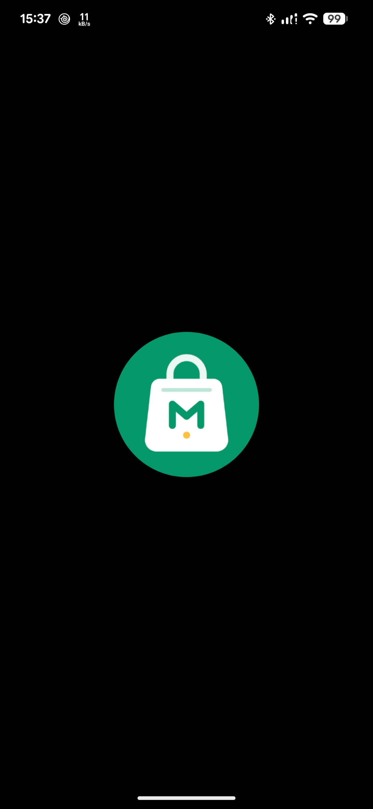
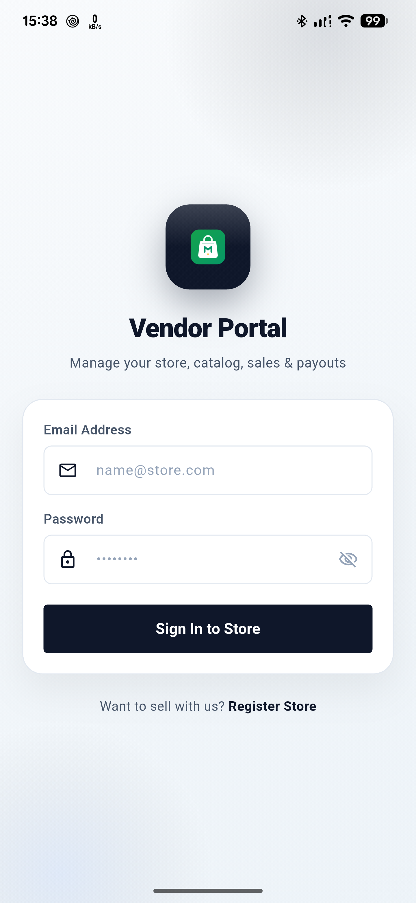
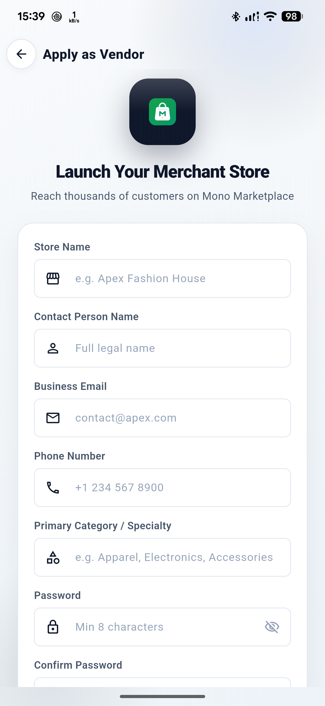
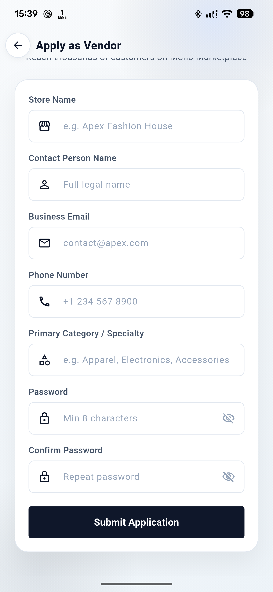
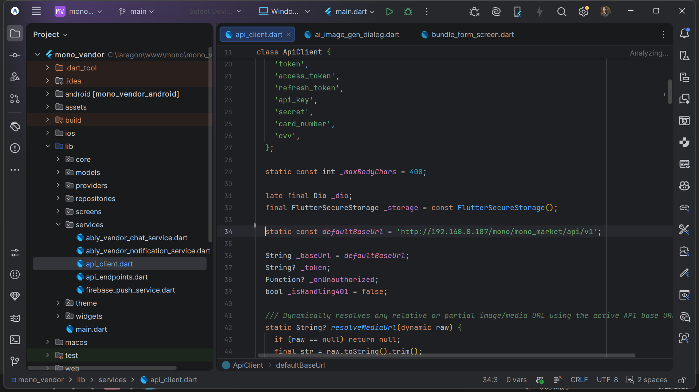

Public screen classes
27 screens + MainVendorShell Included
APP / 01
Included
27 Screen Classes
Dedicated vendor mobile portal with order fulfillment and catalog sync.
APP / 02
1.0.0+1
com.mono.vendor.app
Built for high-volume store owners on Android and iOS devices.
APP / 03
Real-time
Ably + FCM Push
Instant live chat with buyers and foreground order notification sounds.
APP / 04
Secure
Sanctum Token Gate
Scoped vendor token with granular withdrawal and product controls.
Mono Vendor. App documentation.
Complete setup, API, and release guide.
A corrected operations guide for the current mono_vendor Flutter project: 27 public *Screen classes plus MainVendorShell, the actual layered source tree, locked packages, local API wiring, Android push, and the release gaps still visible in the repository.
Application identity
com.mono.vendor.app 1.0.0+1Active API default
example.com / api / v1 Local LANMono Vendor overview
mono_vendor is the checked-in Flutter application package. Its Dart description is “Mono Marketplace Vendor Management Application”, its declared version is 1.0.0+1, and the Dart-facing app name is Mono Vendor. This page documents the repository as it exists now, including its real branding mismatch, local API default, and unfinished release configuration.
| Detail | Value | Notes |
|---|---|---|
| Dart package | mono_vendor | pubspec.yaml |
| Version | 1.0.0+1 | pubspec.yaml |
| Description | Mono Marketplace Vendor Management Application | pubspec.yaml |
| Android namespace / application ID | com.mono.vendor.app | android/app/build.gradle.kts |
| iOS bundle ID | com.mono.vendor.app | ios/Runner.xcodeproj/project.pbxproj |
| Top-level routes | /, /login, /register, /dashboard | lib/main.dart |
What the application actually manages
The source-backed surface is a vendor commerce workspace: dashboard reporting, product catalog and bundles, taxonomy requests and custom definitions, orders, delivery requests and tracking, media, customer chat, followers, notifications, AI quota, package plans, settlements, withdrawals, and store settings.
Catalog
Products use a five-step form. Bundles use a separate four-step form. Categories, brands, attributes, FAQs, and the media library are independent screens in the shell.
Commerce
Order, delivery, wallet, package, AI-credit, and hosted-checkout workflows use repositories and API endpoints. A local Flutter package manager is not part of the app.
Workspace
Provider supplies state, Ably supplies server-authorized realtime sessions, and Android FCM is initialized only after the authenticated shell mounts.
Source boundary: there is no standalone business-listing module, payment-log screen, support-ticket workflow, map/geolocation package, commercial UI-suite dependency, or payment-gateway SDK in the current project. Hosted purchases run through flutter_inappwebview and backend status polling.
Route map and shell behavior
Only four routes are registered with Flutter’s named router. The remaining drawer destinations switch bodies inside MainVendorShell; the drawer is available on Overview, while sub-screens use a back-to-Overview bar.
MaterialApp(
initialRoute: '/',
routes: {
'/': SplashScreen,
'/login': VendorLoginScreen,
'/register': VendorRegisterScreen,
'/dashboard': MainVendorShell,
},
)The layered source tree that exists now
lib/ is organized by technical layer and by feature folders inside screens/. Generated caches and IDE state are not part of the documented source architecture.
mono_vendor/
├─ .gitignore
├─ .metadata
├─ README.md
├─ analysis_options.yaml
├─ analyze_errors.txt
├─ analyze_out.log
├─ pubspec.yaml
├─ pubspec.lock
├─ assets/
│ ├─ logo.png
│ └─ icons/ app icon, logo, drawer + UI SVGs
├─ lib/
│ ├─ main.dart
│ ├─ core/ constants, logger, translations, formatting, RTL, presence
│ ├─ models/ dashboard, AI, bundle, chat, delivery, FAQ, follower, media,
│ │ notification, order, package tier, product, profile, taxonomy, wallet
│ ├─ providers/ AI quota, locale, theme, auth, dashboard, follower, notification,
│ │ order, product, wallet
│ ├─ repositories/ translation, AI, auth, bundle, chat, dashboard, delivery, FAQ,
│ │ follower, media, notification, order, package, product, settings,
│ │ taxonomy, wallet
│ ├─ screens/ shell, splash, auth, and feature screen folders
│ ├─ services/ Ably chat, Ably notifications, API client, endpoints, FCM
│ ├─ theme/ app_colors.dart, app_theme.dart
│ └─ widgets/ app bars, buttons, dialogs, drawer, fields, HTML, filters,
│ search, status, empty, error, and shared UI
├─ android/
├─ ios/
├─ macos/
├─ web/
├─ windows/
└─ test/| Layer | Responsibility | Representative files |
|---|---|---|
| Core | Cross-cutting constants, logging, translations, formatting, RTL icon behavior, chat presence | app_constants.dart, app_logger.dart, app_translations.dart |
| Models | Data shapes and JSON parsing used by providers and screens | vendor_product.dart, vendor_order.dart, vendor_wallet.dart |
| Providers | ChangeNotifier state, loading, mutations, and refresh logic | vendor_auth_provider.dart, vendor_dashboard_provider.dart |
| Repositories | HTTP calls, endpoint use, parsing, and platform service access | vendor_auth_repository.dart, vendor_notification_repository.dart |
| Screens | Public *Screen classes plus internal widgets and form sections | dashboard_screen.dart, product_form/, delivery/ |
| Services | Shared API, realtime, and push infrastructure | api_client.dart, ably_vendor_chat_service.dart, firebase_push_service.dart |
| Theme / widgets | Color constants, light/dark themes, and reusable presentation components | app_colors.dart, app_drawer.dart, empty_state.dart |
Do not treat generated folders as architecture. .dart_tool/, .idea/, build/, Gradle caches, and generated local configuration are workspace byproducts, not the app’s source-layer design.
Twenty-seven public screens, plus the shell
The class count comes from public classes named *Screen in lib/screens/. Wizard sections, bundle steps, delivery tabs, dialogs, cards, and controllers are internal subviews; they are not additional public screens.
Drawer and internal destination map
| Drawer group | Destinations |
|---|---|
| Main | Overview, Orders, Inbox, Media, Followers |
| Catalog | Products, Product bundles, Categories, Brands, Attributes, FAQs |
| Delivery | Requests, History, Tracking |
| Payouts | Settlements, Withdrawals |
| Scale | Packages, AI credits when AiQuotaProvider.aiEnabled is true |
| System | Settings; the account dock also exposes settings and logout |
Public screen classes
| # | Public class | Source-backed workflow |
|---|---|---|
| 01 | SplashScreen | Animated Mono logo, wordmark, and progress; routes an authenticated vendor to the dashboard. |
| 02 | VendorLoginScreen | Email/password validation, sign-in, error banner, and a route into vendor registration. |
| 03 | VendorRegisterScreen | Store name, contact name, business email, phone, specialty, password, and confirmation; submits the registration payload. |
| 04 | DashboardScreen | Store status, 30-day sales/orders/AOV/live products, pending and out-of-stock summaries, fulfillment pipeline, fl_chart sales/orders toggle, recent orders, top products, low stock, conditional AI usage, and catalog actions. |
| 05 | ProductListScreen | Search, status filters, product cards, and add/edit/delete entry points. |
| 06 | ProductFormScreen | Five internal steps: Description, Media, Details, Pricing, and Fulfillment. Includes AI copy/translation, media, taxonomy, status, price, stock, SKU, variations, and physical/digital delivery. |
| 07 | BundleListScreen | Bundle statistics, search, status filters, and add/edit/delete entry points. |
| 08 | BundleFormScreen | Four internal steps: information, media, product builder, and pricing/SEO. Before the bundle can be saved, the form requires at least two selected products, and every selected product must still be published. |
| 09 | CategoriesScreen | Available categories and personal requests, search, request dialog, and request status/rejection metadata. |
| 10 | BrandsScreen | All/custom/global filters, custom-brand editing, and read-only global brands. |
| 11 | AttributesScreen | All/custom/global filters and custom attribute/value management. |
| 12 | StoreFaqsScreen | Language selector, FAQ add/edit/delete, and AI translation context. |
| 13 | MediaLibraryScreen | Search, all/image/file filters, multi-image upload, details, copy URL, delete, and picker mode. |
| 14 | OrderListScreen | Search plus all, pending, processing, shipped, delivered, and cancelled filters. |
| 15 | OrderDetailScreen | Order, customer, items, notes, earnings, status timeline, and a conditional status update sheet. |
| 16 | DeliveryScreen | Requests, History, and Tracking tabs, request creation dialog, and tracking-detail entry. |
| 17 | DeliveryTrackingDetailScreen | Read-only order-level shipment timeline and shipment states. |
| 18 | VendorChatListScreen | Unified customer conversations, search, all/unread filters, unread count, and realtime updates. |
| 19 | VendorChatThreadScreen | Customer/product context, Ably presence, history, image/file replies, delivered marking, and RTL bubbles. |
| 20 | FollowersScreen | Paginated infinite-scroll followers and entry into a customer conversation. |
| 21 | NotificationsScreen | All, Orders, Chats, Wallet, and System tabs; date grouping, unread badges, read state, and deep links. The UI has no swipe-to-delete gesture. |
| 22 | AiCreditsScreen | Copy, translation, and image quota meters; purchase history and packs; hosted checkout. |
| 23 | SettlementsScreen | Date range, gross/commission/net totals, load more, CSV export, and order-detail links. |
| 24 | WithdrawalRequestScreen | Available balance, amount rules, backend-defined method and fields, and an optional note. |
| 25 | PackagesScreen | Package/commission status, current and pending subscriptions, API-provided plan cards/limits, and hosted checkout. |
| 26 | StoreSettingsScreen | Pause/resume, dark/light selection, backend language, profile/address, change-password dialog, and logout. |
| 27 | VendorCheckoutWebviewScreen | Hosted purchase WebView, progress, status polling, backend return/custom mono:// handling, and close confirmation. |
Subview accounting: the product form contributes five steps, the bundle form four steps, and delivery three tabs. Dialogs, dashboard cards, list cards, form sections, and controllers remain implementation details inside their owning public screen.
Actual Android capture set
These are the current app captures, not generated mockups. They show the native splash and the current login/registration UI reached on a connected Android device.




Toolchain and target requirements
The lockfile and platform projects define the supported toolchain floor. Both application packages and toolchain constraints have been upgraded to Flutter 3.47.7 and Dart 3.13.5.
| Target | Requirement | Where it lives |
|---|---|---|
| Dart | ^3.13.5 in pubspec.yaml | Lock SDK floor: >=3.13.5 <4.0.0 |
| Flutter | >=3.47.7 | pubspec.lock |
| Android | compile SDK 37; minimum runtime is maxOf(flutter.minSdkVersion, 23); Java/Kotlin 17 | android/app/build.gradle.kts |
| Android build plugins | AGP 9.1.0; Kotlin 2.4.0; Gradle 9.3.1; Google services 4.4.2 | android/settings.gradle.kts, wrapper properties |
| iOS | deployment target 15.0; bundle com.mono.vendor.app | ios/Runner.xcodeproj/project.pbxproj |
| macOS | deployment target 12.0; bundle com.mono.monoVendor | macos/Runner.xcodeproj/project.pbxproj |
| Web / Windows | Target folders exist, but mobile-only dart:io imports mean the app targets Android and iOS only. | lib/ plus platform folders |
Before the first run
- Use Flutter 3.47.7 or newer and a Dart SDK (3.13.5+) compatible with the project constraint.
- For Android, run on an API 23+ device or emulator and configure a reachable API URL.
- For iOS, open the generated
Runner.xcworkspaceon macOS; no signing team is checked in. - Do not assume web or Windows parity: the current Dart source contains
dart:iodependencies.
Install and launch from the repository
The project is a standard Flutter application rooted at mono_vendor/. Resolve packages from the checked-in lockfile, choose a visible target, and run normally.
Official App Tutorial
Flutter • 18:26 Full Setup
Backend • Mobile Sync
Complete Guide to Setting Up the Mono Market Flutter App with the Backend
Step-by-step setup tutorial by ClotCode walking through connecting the Mono Market vendor & customer Flutter mobile apps to your live or local backend: setting API base URLs, Android cleartext network security, Firebase push notifications (FCM), toolchain requirements (Flutter 3.47.7 & Dart 3.13.5), resolving dependencies, and testing real-time synchronization on Android emulators and devices.
cd mono_vendorflutter pub getflutter devicesflutter run -d <device-id>Run sequence
- Open the
mono_vendorproject folder in Android Studio or another Flutter-enabled editor. - Run
flutter pub get; the lockfile resolves 187 packages, including transitives. - Confirm the selected device in
flutter devices. - Run
flutter run -d <device-id>. Android Studio can perform the same launch through its Flutter run configuration. - Expect
SplashScreen, then login or registration when no valid token is restored.
Configuring the API Base URL: Point the application to your backend server URL (e.g. https://example.com/api/v1). Update lib/services/api_client.dart or pass --dart-define=API_URL=https://example.com/api/v1 on launch.
Local HTTP Cleartext Traffic: If testing against an unencrypted local HTTP server, ensure android:usesCleartextTraffic="true" is present in android/app/src/main/AndroidManifest.xml under the <application> tag.
Android Studio evidence
The hero capture is the full-HD project view from the current source. It shows the layered lib/ tree and the active API constant in api_client.dart; use the lightbox to inspect it at full size.
Exact direct declarations and locked versions
pubspec.lock contains 187 packages in total. All direct core packages have been verified and upgraded for Flutter 3.47.7 & Dart 3.13.5.
| Package | Declared constraint | Locked version | Role in current source |
|---|---|---|---|
cupertino_icons | ^1.0.9 | 1.0.9 | Declared direct icon package; no current lib/ import. |
provider | ^6.1.5+1 | 6.1.5+1 | Application state and dependency injection across providers and screens. |
dio | ^5.11.1 | 5.11.1 | HTTP client, interceptors, auth headers, errors, and request logging. |
ably_flutter | ^1.2.44 | 1.2.44 | Server-authorized realtime customer chat and notification channels. |
dart_quill_delta | ^10.8.3 | 10.8.3 | Rich-content delta model in the editor and HTML conversion path. |
flutter_quill | ^11.6.0 | 11.6.0 | Rich text editing controls for product and bundle content. |
html | ^0.15.6 | 0.15.7 | HTML parsing/rendering for server-provided rich content. |
vsc_quill_delta_to_html | ^1.0.5 | 1.0.5 | Quill delta conversion for the rich-content path. |
firebase_core | ^5.0.0 | 5.0.0 | Android Firebase initialization in the push service. |
firebase_analytics | ^12.6.0 | 12.6.0 | Declared direct package; no current lib/ import. |
firebase_messaging | ^17.0.0 | 17.0.0 | FCM listeners, permission, token refresh, and notification routing. |
flutter_local_notifications | ^22.3.2 | 22.3.2 | Android channel, permission plumbing, foreground tray notifications, and taps. |
flutter_cache_manager | ^3.4.5 | 3.4.5 | Cached remote media and notification big-picture images. |
flutter_secure_storage | ^11.2.0 | 11.2.0 | Auth token and stable notification device ID storage. |
shared_preferences | ^2.5.5 | 2.5.5 | Theme, locale, cached base URL, and related client preferences. |
flutter_svg | ^2.3.0 | 2.3.0 | Drawer, app bar, and UI SVG assets. |
cached_network_image | ^4.0.0 | 4.0.0 | Cached backend media across product, bundle, order, and media screens. |
fl_chart | ^1.2.0 | 1.2.0 | Dashboard sales and order chart. No chart license key is referenced. |
intl | ^0.20.3 | 0.20.3 | Date, number, and locale-aware formatting. |
image_picker | ^1.2.3 | 1.2.3 | Local media selection for upload workflows. |
logger | ^2.8.0 | 2.8.0 | Structured application and network logging. |
url_launcher | ^6.3.2 | 6.3.2 | External links from vendor-facing workflows. |
flutter_inappwebview | ^6.1.5 | 6.1.5 | Hosted package and AI-credit checkout with return handling. |
share_plus | ^13.3.0 | 13.3.0 | Platform sharing actions in the current app. |
flutter_lints dev | ^6.0.0 | 6.0.0 | Dart/Flutter static lint rules. |
flutter_launcher_icons dev | ^0.14.4 | 0.14.4 | Generates Android, iOS, and web launcher icons. |
flutter, flutter_localizations | SDK | SDK-provided | Framework and localization delegates. |
flutter_test dev | SDK | SDK-provided | Widget and unit test runner. |
Capability boundary: the current chart implementation is fl_chart. The project declares no map/geolocation dependency and no payment-gateway SDK; checkout remains a hosted WebView workflow.
The API client is fixed to a local development default
lib/services/api_client.dart owns the global Dio client. The active default is the same local LAN HTTP URL shown in the Android Studio capture.
https://example.com/api/v1
MONO_VENDOR / lib/services/api_client.dart
FLUTTER

Active file
api_client.dart
Base URL example.com / api / v1
Capture 1920 × 1080 / Android Studio
Transport HTTP / LAN
Current client behavior
- Adds
Authorization: Bearer <token>when a token is available. - Adds
X-LocaleandAccept-Languagefrom the vendor language preference, defaulting toen. - Uses a 15-second connect timeout and a 30-second receive timeout. No explicit
sendTimeoutis configured in the current client. - Redacts credentials and tokens from request logs and truncates long bodies.
- Resolves relative media paths against the active API base.
- On HTTP 401, clears the token and invokes the logout/redirect callback registered in
main.dart. - Restores
vendor_api_base_urlfromSharedPreferenceswhen present.
Endpoint registry groups
| Registry group | Paths / behavior |
|---|---|
| Auth & account | /vendor/auth/login, /vendor/auth/register, /vendor/auth/logout, profile GET/PUT, change password, pause/resume |
| Dashboard | /vendor/dashboard |
| Products & catalog | Products, categories, brands, attributes, vendor languages, category requests, custom brand/attribute stores |
| Bundles | Product bundles, candidates, bundle detail |
| Orders | Orders, order detail, status update, digital delivery |
| Delivery | Requests, cancel request, history, tracking, order tracking |
| Media | Media list, upload, media detail |
| Chat & followers | Unified messages, start conversation, token request, conversation, reply, poll, delivered, followers |
| Notifications | Inbox, unread count, register/unregister token, read-all, bulk mark/delete, per-item read/delete |
| AI | Quota, copy, image, translation, credits, and credit-pack checkout |
| FAQs & packages | Store FAQs, package list, package checkout |
| Wallet | Wallet, settlements, withdrawals |
| Settings | Settings, payout details, notification settings |
Authentication and translations
Login and registration post credentials or the registration payload to the vendor auth endpoints. Profile updates use PUT /vendor/profile. Language discovery uses GET /languages?scope=mobile; translation bundles use GET /translations/{code} in TranslationRepository.
Do not publish this URL as a production default. It is plain HTTP on a private LAN address. The app source also enables cleartext traffic on Android and arbitrary loads on iOS; production hardening must be decided and implemented outside this documentation-only change.
No hidden environment-variable base URL
The repository has no --dart-define path, no environment-file loader, and no current UI caller for ApiClient.setBaseUrl. Store Settings does not expose a server URL.
How the active URL is selected
ApiClientstarts withdefaultBaseUrl.- After initialization, a non-empty
vendor_api_base_urlvalue inSharedPreferencesoverrides it. - Otherwise the compiled-in local LAN default remains active.
static const defaultBaseUrl =
'https://example.com/api/v1';Current change paths: update the constant in source, call setBaseUrl from code, or pre-seed the SharedPreferences key. A documented settings screen or dart-define override would be a future source change, not a current capability.
Transport security flags
| Platform file | Current setting | Implication |
|---|---|---|
android/app/src/main/AndroidManifest.xml | android:usesCleartextTraffic="true" | Allows the current HTTP LAN URL on Android. |
ios/Runner/Info.plist | NSAllowsArbitraryLoads = true | Allows arbitrary network loads on iOS. |
Branding, palette, launcher assets, and settings
The app’s real display labels are not identical. Preserve that distinction when changing store metadata, launcher output, screenshots, or documentation.
| Surface | Current value |
|---|---|
| Dart app title | Mono Vendor from AppConstants.appName |
| Android launcher label | Mono V from AndroidManifest.xml |
| iOS display name | Mono Vendor from Info.plist |
| Android / iOS ID | com.mono.vendor.app |
| Dark / light control | Inside StoreSettingsScreen, not the navigation drawer |
Primary theme colors
Slate
#0F172AEmerald
#059669Emerald light
#34D399Sapphire
#2563EBAmber
#F59E0BPurple
#8B5CF6Teal
#14B8A6Sky
#0EA5E9Danger
#EF4444pubspec.yaml declares no font family or bundled font assets. The app uses Flutter theme typography and a small number of explicit monospace contexts.
Launcher icon configuration
flutter_launcher_icons uses assets/icons/app_icon.png and app_icon_foreground.png, with an adaptive background of #059669. Its generation setting says min_sdk_android: 21; the actual Android app currently builds with maxOf(flutter.minSdkVersion, 23). These values serve different purposes and are not interchangeable.
Android FCM is lazy; realtime uses server-issued Ably tokens
main.dart initializes API, theme, locale, and auth providers, but it does not initialize Firebase. Authenticated MainVendorShell binds the notification store, connects Ably notifications, then starts FCM in the background.
main()
└─ MonoVendorApp
└─ authenticated MainVendorShell
├─ bind VendorNotificationStore
├─ connect Ably notification channel
└─ FirebasePushService.initialize()
├─ Android guard
├─ high_importance_channel
├─ request notification permission
├─ register foreground/open/refresh listeners
└─ register device tokenSet up your own Firebase project, step by step
The repository ships with a working google-services.json so the app runs immediately, but that file points at a shared Firebase project. Create your own before you publish. The whole process takes about ten minutes and needs only a free Google account.
- Create the project. Open console.firebase.google.com, click Add project, give it a name such as
mono-vendor, and disable Google Analytics unless you want it. The project finishes creating after you confirm the analytics choice. - Add the Android app. On the project overview click the Android icon. Enter the package name — it must match your
applicationIdcharacter for character, so usecom.mono.vendor.appif you have not renamed it yet. Give the app a nickname and downloadgoogle-services.json. - Place the config file. Copy it to
android/app/google-services.json, replacing the bundled one. Both the filename and the folder are required by the Google Services Gradle plugin; a wrong path builds fine but throwsDefault FirebaseApp is not initializedat runtime. - Enable Cloud Messaging. In the left sidebar open Build → Cloud Messaging. The Send test message button confirms the project can deliver notifications. Nothing else is required for FCM to work.
- Leave the channel to the app. The app creates an Android notification channel named
high_importance_channel(“Orders and Updates”) at runtime. Do not create a matching channel in the console — the app owns it, and a duplicate console channel is ignored. - Rebuild rather than hot reload. Changing
google-services.jsonneeds a full rebuild. Stop the app and runflutter run -d <android-device-id>again, addingflutter cleanfirst if the old configuration appears to be cached.
Finding your values. Project settings → Your apps shows the registered package name and the API key. Never commit a service-account key or a private key file. The API key inside google-services.json identifies the project but is not a secret by itself — access is governed by Firebase security rules.
Android push facts
android/app/google-services.jsonis tracked and contains thecom.mono.vendor.appclient. Replace the placeholder values with your own Firebase credentials.- The Android channel is
high_importance_channel, labeled “Orders and Updates”. - Token registration posts to
/vendor/notifications/register-token; logout unregisters through/vendor/notifications/unregister-token. - A stable
vendor_notification_device_idis created and kept in secure storage. FirebasePushService.initialize()returns without work on non-Android targets.
Ably chat and notifications
ably_vendor_chat_service.dart and ably_vendor_notification_service.dart request token requests from the backend chat-token endpoint and use Ably auth callbacks. No hard-coded Ably API key is present in the current Dart source.
iOS provisioning is developer-supplied. Generated plugin registration can include Firebase plugins, but Apple signing, APNs credentials, the Firebase plist, and the iOS Dart initialization path must be configured by the developer. Follow the iOS setup section below to complete the integration.
iOS setup: signing, Firebase, and push notifications
Complete the setup below to take the generated iOS target from local development to a signed build with APNs and Firebase Cloud Messaging. The Flutter shell and bundle identifier are present in the repository; Apple credentials, APNs credentials, and the Firebase iOS configuration are supplied through Xcode, Firebase, and the Apple Developer portal.
Before you begin: use macOS with Xcode, Flutter 3.44.0 or newer, CocoaPods, an Apple Developer team, and access to the Firebase project. Keep the APNs .p8 key, signing assets, and private credentials outside source control.
| Setup area | Required configuration |
|---|---|
| Workspace | Open ios/Runner.xcworkspace after resolving Flutter packages and CocoaPods. |
| Bundle / target | Use com.mono.vendor.app with an iOS 15.0 deployment target. |
| Apple signing | Select the organization’s development team in Xcode and use automatic signing for development and distribution. |
| Firebase iOS app | Register com.mono.vendor.app in Firebase and add its GoogleService-Info.plist to the Runner target. |
| Push notifications | Enable Push Notifications and the Remote notifications background mode in the Runner target. |
| Dart initialization | Update the Android-only guard in lib/services/firebase_push_service.dart so iOS initialization and token registration are allowed. |
1. Prepare Apple and Firebase access
- In the Apple Developer portal, create or select an App ID for
com.mono.vendor.appand enable App Push Notifications. - Create an APNs authentication key and save the
.p8file securely. Record its Key ID and Apple Team ID; do not paste the key or private material into this guide. - In the Firebase project used by this app, register an iOS app with the exact bundle ID
com.mono.vendor.app, then downloadGoogleService-Info.plist.
2. Resolve Flutter and CocoaPods
flutter pub get
cd ios
pod install
cd ..
open Runner.xcworkspaceThe repository does not check in a Podfile. If CocoaPods reports that the file is missing, restore the standard Flutter iOS Podfile for the installed Flutter SDK, review it, and then run pod install. Always open the workspace, not the bare Runner.xcodeproj.
3. Configure signing in Xcode
- Open
ios/Runner.xcworkspaceand select theRunnerproject. - Open Signing & Capabilities for the Runner target.
- Enable Automatically manage signing, select the organization’s Apple Developer team, and confirm the bundle identifier is
com.mono.vendor.app. - Keep the deployment target at iOS 15.0 or higher, choose a physical iPhone for notification testing, and resolve any signing errors before continuing.
4. Add the Firebase iOS configuration
- Drag
GoogleService-Info.plistinto theios/Runnerdirectory. - In Xcode, open the file’s inspector and confirm Target Membership includes Runner.
- Do not add API keys, APNs private keys, or signing credentials to documentation, source comments, or screenshots.
5. Enable APNs and background delivery
- In Signing & Capabilities, add the Push Notifications capability to the Runner target.
- Add Background Modes and enable Remote notifications.
- In Firebase Console, open Project settings → Cloud Messaging → iOS, upload the APNs
.p8key, and enter its Key ID and Apple Team ID. - Build and run on a physical iPhone, allow notifications when prompted, and confirm the app receives a foreground and background test message.
6. Enable the Dart-side iOS path
The current FirebasePushService.initialize() returns immediately unless the platform is Android. For iOS push, change that guard so both Android and iOS continue through the existing Firebase initialization, permission request, foreground handling, and token registration flow. Keep the authenticated lazy initialization in MainVendorShell; do not initialize a second unrelated notification service.
final supportedPlatform = Platform.isAndroid || Platform.isIOS;
if (!supportedPlatform) return;
await Firebase.initializeApp();
// Keep the existing permission, listener, and token flow below.After the app signs in, verify that the device token is sent to /vendor/notifications/register-token and that logout calls /vendor/notifications/unregister-token. Confirm that the existing high_importance_channel behavior remains unchanged for Android.
7. Build, test, and release
flutter run -d <ios-device-id>
flutter build ios --no-codesign
flutter build ipa --release- Use
flutter build ios --no-codesignas a compile/configuration check before enabling distribution. - Test login, notification permission, foreground delivery, background delivery, deep links, and logout unregistration on a physical device.
- For TestFlight or the App Store, select the correct team and distribution profile in Xcode, increment the build number, archive the Runner scheme, and validate the IPA before upload.
Build commands and expected targets
Use the normal Flutter commands after package resolution. Select a real device ID rather than assuming an emulator name.
Android debug run
flutter pub getflutter run -d <android-device-id>flutter build apk --debugAndroid application ID and namespace are both com.mono.vendor.app. The debug build can use the bundled Google services client and the local HTTP development URL.
Change the application ID before you publish
Both platforms ship with the identifier com.mono.vendor.app, which is a real reverse-domain identifier and builds fine. Google Play and the App Store each require the identifier to belong to the account publishing the app, so replace it with your own before your first upload. Pick a domain you own — for example com.yourcompany.mono.vendor.
| Platform | File | What to change |
|---|---|---|
| Android namespace | android/app/build.gradle.kts | namespace = "com.yourcompany.mono.vendor" |
| Android application ID | android/app/build.gradle.kts | applicationId = "com.yourcompany.mono.vendor" |
| iOS bundle ID | ios/Runner.xcodeproj/project.pbxproj | PRODUCT_BUNDLE_IDENTIFIER for the Runner target (leave the .RunnerTests entries alone unless you rename them too) |
| Firebase Android app | Firebase console | Re-register the app under the new package name and download a fresh google-services.json |
Renaming the Android package also means moving the Kotlin sources to match: android/app/src/main/kotlin/com/mono/vendor/app/MainActivity.kt becomes android/app/src/main/kotlin/com/yourcompany/mono/vendor/app/MainActivity.kt, and its package line must change too. Forget this and the build fails with a Namespace 'com.mono.vendor.app' is not a valid namespace error pointing at the manifest.
Android SDK levels are pinned deliberately
android/app/build.gradle.kts sets compileSdk = 37 and pins targetSdk = 36 as an explicit integer rather than flutter.targetSdkVersion. The Flutter value resolves to 35 on Flutter 3.29 and newer, which is below the current Google Play submission requirement, so the explicit number keeps your uploads accepted as you upgrade Flutter. minSdk stays at maxOf(flutter.minSdkVersion, 23) because Firebase Messaging and flutter_local_notifications need a modern minimum.
iOS run
open ios/Runner.xcworkspaceOn macOS, open the workspace, select a development team and runnable signing configuration in Xcode, then complete the iOS setup section before testing notifications.
Other generated targets
macOS declares deployment target 12.0. Web and Windows folders are generated Flutter targets, but mobile-only imports mean the current source does not verify web support. Treat any such build as an engineering task, not an existing guarantee.
Release blockers visible in source
The repository is runnable source, but it does not contain production signing or production transport configuration. A release build command can still be issued, yet that is not the same as a store-ready artifact.
| Blocker | Source evidence | Required decision |
|---|---|---|
| Android release uses debug signing | android/app/build.gradle.kts assigns signingConfigs.getByName("debug") to release. | Create and manage a real release keystore outside source control, then configure the release build securely. |
| No signing material | No key.properties, JKS, or upload keystore is checked in. | Provision the organization’s signing material and recovery process. |
| Local HTTP API | Default is http://example.com/.... | Choose and implement a production API transport and base URL. |
| Cleartext / arbitrary loads | Android and iOS flags currently permit unencrypted transport. | Tighten transport policy for the release platform. |
| iOS signing and push | Apple team, profile, APNs capability, and Firebase plist are environment-specific. | Follow the iOS setup section to provision signing, APNs, Firebase, and the Dart initialization path. |
Release status: Android release signing is currently a debug-key placeholder. Do not present the current release build as suitable for store distribution.
Add work along the project’s actual layers
Mono Vendor uses repositories behind providers, with public screens selected by the shell. Extend the current layers rather than introducing a second navigation or state system.
Source-backed extension sequence
- Add or update the data shape under
lib/models/. - Add the server path to
lib/services/api_endpoints.dartwhen a new endpoint is required. - Implement request, response parsing, and error behavior in the matching
lib/repositories/class. - Expose loading, mutation, and refresh state through a
ChangeNotifierinlib/providers/. - Register a persistent provider in the
MultiProviderlist inlib/main.dartwhen its lifetime is app-wide. - Build the public UI under the appropriate
lib/screens/feature folder and reuselib/widgets/components. - For a shell destination, add an
AppConstantskey, drawer selection, title mapping, and_buildActiveBody()case inMainVendorShell. - Add focused tests under
test/for parsing, provider behavior, or widget output.
Screen
└─ Provider<ChangeNotifier>
└─ Repository
├─ ApiEndpoints path
├─ ApiClient / service
└─ Model parsingWorked example: add a wishlist feature module
Here is the sequence above applied to one concrete feature, so you can copy the shape rather than infer it. The example adds a vendor wishlist backed by a GET /vendor/wishlist endpoint.
- Model —
lib/models/vendor_wishlist_item.dart. A plain data class withfromJson, matching the field names the endpoint returns. - Endpoint —
lib/services/api_endpoints.dart. Add a static path constant alongside the existing vendor routes; never inline a URL in a repository. - Repository —
lib/repositories/wishlist_repository.dart. Takes anApiClient, calls the endpoint, maps the response into the model, and returns typed data or throws — no widget types. - Provider —
lib/providers/wishlist_provider.dart. AChangeNotifierholdingitems,isLoading, anderror, withload()andtoggle(item). Register it in theMultiProviderlist inlib/main.dartif it should survive navigation. - Screen —
lib/screens/wishlist/wishlist_screen.dart. A public*Screenclass that watches the provider and renders loading, empty, error, and populated states. Reuse existinglib/widgets/cards instead of restyling. - Navigation. Push the screen with
Navigator.pushfrom an existing entry point. Only touchMainVendorShellif the feature is a new permanent drawer destination, in which case add theAppConstantskey, the drawer item, the title mapping, and the_buildActiveBody()case together.
lib/
├─ models/vendor_wishlist_item.dart ← new
├─ services/api_endpoints.dart ← add wishlist path
├─ repositories/wishlist_repository.dart ← new
├─ providers/wishlist_provider.dart ← new
├─ screens/wishlist/wishlist_screen.dart ← new
└─ widgets/wishlist_tile.dart ← new, if reused
main.dart ← register provider (if app-wide)Test the boundary, not the pixels. A repository test that asserts fromJson handles a missing optional field, and a provider test that asserts load() sets error on failure, cover the parts most likely to break. Widget tests are worth adding when a screen has a non-trivial empty or error state.
Keep navigation truthful. The shell drawer belongs on Overview. Internal subviews should remain inside their owning screen unless a new public *Screen class is deliberately added and counted in the inventory.
Communication exists; a support-ticket system does not
Mono Vendor communicates with customers through the unified chat list/thread, follower conversation entry, notifications, and server-authorized Ably sessions. Store Settings exposes account and logout actions. These are the source-backed communication paths.
| Checked item | Source result |
|---|---|
| Customer communication | Unified chat, thread replies, presence, followers, and notifications are implemented. |
| Support-ticket endpoint | No support-ticket endpoint or repository exists. |
| Support contact | No email address, phone number, or external support contact is defined in this repository. |
| Payments | Settlements, withdrawals, and hosted checkout exist; there is no payment-log screen. |
| Maps | No map/geolocation package is declared. |
| Screen count | 27 public *Screen classes plus MainVendorShell. |
Known source limitations
- The active API is a local cleartext LAN URL.
- Android release mode is debug-signed.
- iOS requires developer-provided Apple signing, APNs, Firebase plist, and Dart push initialization; the setup steps are documented above.
- The app targets Android and iOS; mobile-only
dart:ioimports prevent a web build. - No source-backed support-ticket workflow or support contact exists.
Add your own credentials, signing keys, and production API base URL before you publish. They are intentionally left out of the source package so your keys stay private.